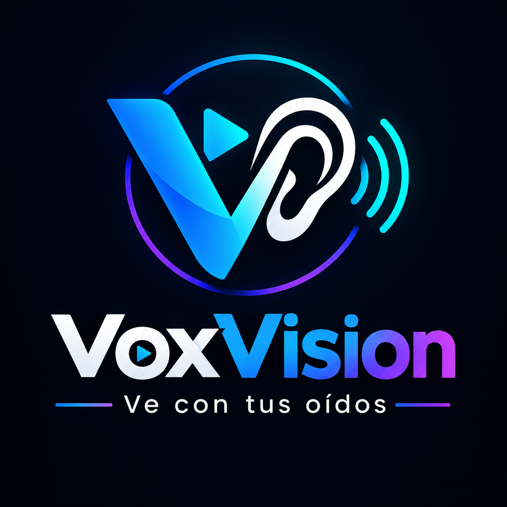

01 — SOCIAL IMPACT
◉

VISION FOR EVERYONEVoxVision
VoxVision is a web-based accessibility project that uses artificial intelligence to detect objects. Its object detection model was trained using Teachable Machine and integrated into the website to explore how technology can help people with visual impairments understand their surroundings.